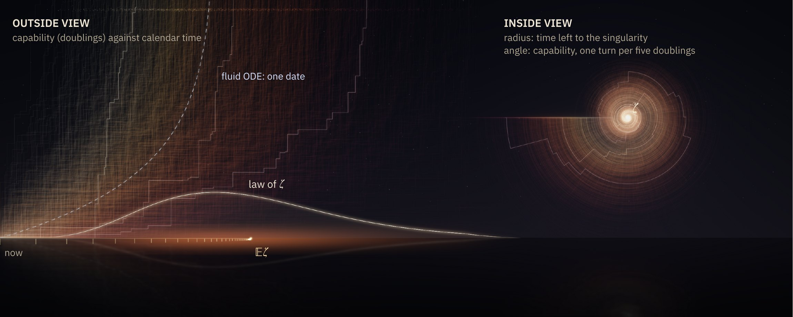
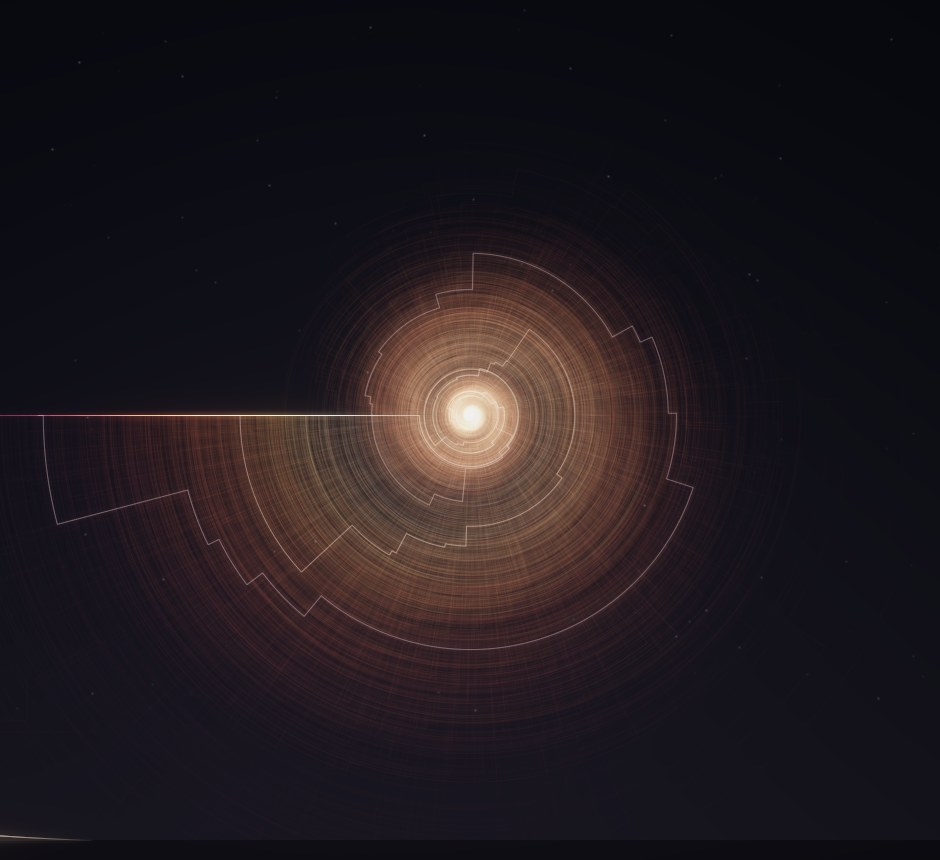

Automating AI research makes capability feed its own growth, and the standard feedback law blows up on one date. Let progress arrive as discrete ideas at random times instead, and that date becomes a random variable with an exact law.

Chan et al. (2026) model a software intelligence explosion with an idea production function under full automation. It reaches infinity at one finite time. We keep its drift and change one thing: progress comes as discrete improvements, each arriving after an exponential wait and multiplying capability by a factor.
With the working paper's central values $\lambda=1.40$ and $\beta=1.01$, and capability doubling every 4.5 months at first, it blows up after
16.6months: one date, no spread
For ideas of relative size $h$, the explosion time is a geometrically weighted sum of independent exponentials. For doubling-sized ideas its mean is 19.0 months, and 90% of it lies in
9.7–31.9months, 90% of the law
All numbers on this page are illustrations under the paper's calibration (Box 1 of the paper), not forecasts of AI development.
Each roll simulates one history of the model, idea by idea, and records the moment it explodes. The histogram of your rolls builds up under the exact law. Smaller ideas give a tighter law; lumpier ideas spread the date out.
Latest history: capability (doublings) against months. Dashed: the deterministic law.
Your rolls (bars) and the exact law of the explosion time (curve).
For every law of positive, independent idea sizes, the process explodes almost surely if $r>1$ and never if $r\le1$. Randomness leaves the explosion criterion of the deterministic law intact and replaces its date by a distribution.
| idea size $h$ | mean | CV | 90% interval | by 12 months |
|---|
Months, at equal local log drift ($\log 2/4.5$ per month). For $h=0.1$ the chance of exploding within a year is under 1%.
Among all idea-size laws with the same standardised mean, the coefficient of variation is smallest when all ideas have the same size.
Several of these identities are classical: the explosion time is an exponential functional of a Poisson process, studied in probability and in the analysis of AIMD congestion control (Bertoin, Biane and Yor; Guillemin, Robert and Zwart), and the small-time asymptotics are due to Borovkov and Ruzankin. The paper gives short self-contained proofs and reads them as statements about timing.
With parameters known, the time left at any moment, measured in the current expected waiting time, has the same law, whatever has happened so far. Forecasts shrink in calendar time, but their relative uncertainty never does.
For doubling-sized ideas the singularity is always expected
4.22current doubling times away
90% predictive interval: 2.15 to 7.10 current doubling times. A response that needs a year and must be ready with 95% probability has to start while the doubling time is still at least 5.59 months.

At every stopping time τ, the product of the remaining time ζ − τ and the current idea rate has the law of the standardised explosion time, independent of the past.
Centred on the realised explosion time, ideas arrive log-periodically with harmonics exactly Γ(1 − 2πik/ℓ). For doubling-sized ideas the oscillation is about 3 × 10⁻¹⁵ of the mean.
The explosion-centred picture needs the realised date, so it is an ensemble fact, not an online detector.
An ideal monitor sees every idea, knows the current rate and the alternative, and must tell steady exponential progress from an accelerating one after the first $n$ ideas. The minimum fixed sample size is
with matching non-asymptotic bounds, where $\ell=\varepsilon\log(1+h)$ is the increase of the log-rate per idea and $z_\alpha$ is the upper-$\alpha$ normal quantile. Small ideas are distinguishable early in proportion; lumpy progress only at the last moment.
A fixed-sample binary experiment with known baseline and known $\ell$; not an anytime alarm and not change-point detection.
Exact $n^\ast\ell^{2/3}$ (dots) and its limit $(12z_\alpha^2)^{1/3}\approx3.19$ at $\alpha=5\%$.
| idea size $h$ | $n^\ast$ | decision after (months) | time left, mean | time left, 5–95% |
|---|
Conditional on explosion. Blue: the deterministic waiting time mixed over an illustrative log-normal prior on $r$. Grey dashed: the exact $c/t$ limit. Orange: intrinsic randomness alone, $r$ known.
If the returns parameter is uncertain with positive density at the critical value, the waiting time has a $1/t$ tail with an exact constant, so its conditional mean is infinite even though explosion is certain once $r>1$.
The prior matches one 90% interval for $r$ reported in the working paper; it illustrates the theorem and is not a fitted forecast.
Three separate extensions, each with its own model and its own scope.
In the deterministic delayed-feedback model, any fixed delay $D>0$ prevents blow-up, and growth becomes double exponential: $\log\log A(t)\sim t\log r/D$. With a three-month delay, $\log A$ doubles about every 6.4 months. The stochastic delayed model is proved not to explode.
If the share of automated labour left to capabilities research falls like $(A/A_0)^{-\gamma}$, the explosion disappears exactly when $\gamma\ge1-1/r$, which is 0.28 at the central values: a diverted share of 47% at ten times today's capability and 85% at a thousand times. Removing the singularity is not, by itself, a statement that oversight keeps pace.
In a deterministic race between capability $A$ and oversight $S$ with a fixed allocation share, the asymptotic regime of $S/A$ is set by the exponents of oversight research, except on the critical line $\varepsilon_S=\varepsilon$, where the share sets the limiting ratio. A fixed share still changes dates and finite-horizon outcomes.
The paper reads its numbers from macros written by the code. High-precision $q$-series with certified truncation, exact detection errors and fixed seeds make every table and figure reproducible.
git clone https://github.com/xiaoyulics/singularity-distribution cd singularity-distribution pip install -r requirements.txt sh reproduce.sh
@misc{li2026singularity,
title = {The Singularity Has a Distribution: Exact Timing Laws and
Detection Limits for a Stochastic Intelligence Explosion},
author = {Li, Xiaoyu and Gao, Zheng and Yang, Chiwun and Sha, Zhizhou},
year = {2026},
note = {Working paper},
url = {https://github.com/xiaoyulics/singularity-distribution}
}
Correspondence: xiaoyulics@gmail.com